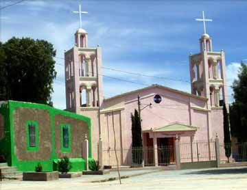

|
THIS IS AN ARCHIVED SITE - ESTE ES UN SITIO ARCHIVADO |
|
Please visit
https://www.realde14.com for the current
site |
|
Visite
https://www.realde14.com para ver el sitio actual |
| Home |
Town |
Area |
History |
Links |
Matehuala to Charcas,
return via Estacion Catorce
| Miles |
Km. |
|||
| From Matehuala go south on Hwy 57 about 10 miles (16 km) to the Charcas Hwy. | ||||
| 0.0 |
0.0 |
Turn right on the highway to Charcas. | ||
| 6.0 | 9.7 |
Km. 160. Road to right goes to La Biznaga and Real de la Maroma. (See Matehuala to San Bartolo and La Maroma roadlog) |
||
| 12.5 | 20.2 | Km. 150. Entering Villa de Guadalupe | ||
| 12.9 | 20.9 | Pemex on right. | ||
| 22.6 | 36.6 |
Zaragosa de Solis. Road to left goes through the village and on to the mezcal factories at Jarillas and Santa Isabel. |
||
| Miles Km | ||||
| 0.0 0.0 Turn left into Solis. | ||||
| 0.6 1.0 End of pavement. Street to the right leads into Ex-hacienda Solis. Continue straight. | ||||
| 4.9 7.9 Jarillas. Fabrica de mezcal is 0.1 miles (0.2 km) to the left. Continue to the right to Santa Isabel. | ||||
| 6.9 11.2 Santa Isabel main plaza. Fabrica de mezcal is 0.1 miles (0.2 km) straignt ahead. Return to Solis to continue toward Charcas. | ||||
| 22.6 | 36.6 | Solis. Turn left on main highway to Charcas. | ||
| 31.2 | 50.5 | Entrance to the Laguna Seca mezcal factory to
the right. This larger commercial distillery is usually in operation
and has a good tour. |
||
| 33.1 | 53.6 | Railway crossing. This is the mainline between Laredo and D.F. | ||
| 33.4 | 54.1 | Turn right to return to Catorce. This road, recently paved, follows the railroad north. (Charcas is 11 miles (18 km) straight ahead. From there a highway continues south to Venado and eventually to San Luis Potosi.) | ||
| 41.4 | 67.1 | Estacion Berrendo | ||
| 51.1 | 82.8 | Guadalupe de Carnicero (Estacion la Maroma). An interesting sculpture of the Virgin de Guadalupe is in front of the church. | ||
| 52.3 | 84.7 |
Tropic of Cancer, 23° 26′ 22″ north latitude. This is one of the first crossings of the tropic by a railway in North America. |
||
| 56.8 | 92.0 | Road to the right goes to Ranchito de Coronado (2.3 miles/3.7 km) and San Antonio Coronados |  |
|
| 61.3 | 99.3 | Wadley. Continue straight to return to Real de Catorce via Estacion Catorce and Venegas. Road to right goes to San Juan de Matanzas or eventually returns to Real de Catorce via Alamitos and La Luz. (See Real de Catorce to Alamitos, via Wadley and San Jose de Coronados roadlog.) | ||
| 66.9 | 108.4 | Estacion Catorce. Continue straight to return to Real de Catorce via Venegas. Road to right returns to Real de Catorce via Los Catorce – four wheel drive only after Carretas. |